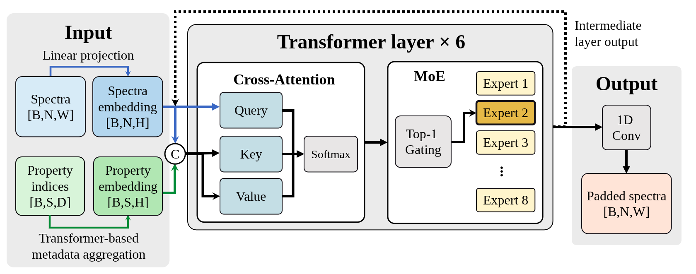
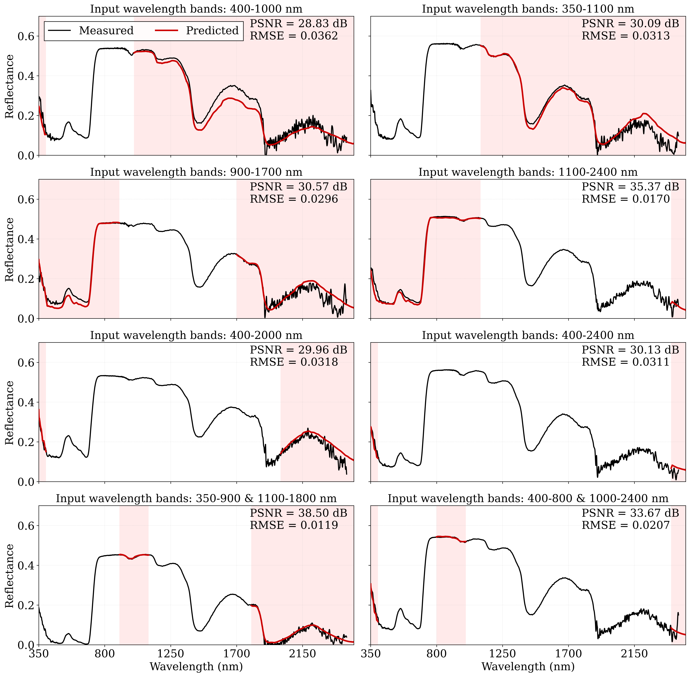
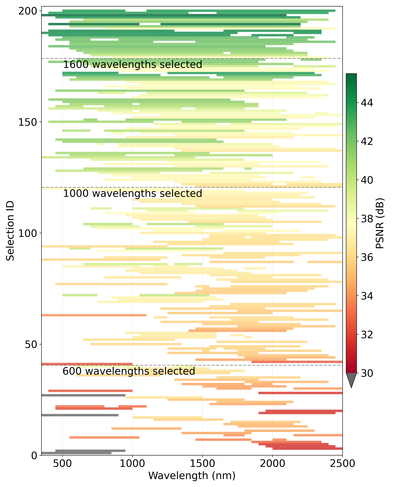

Why PadSpectra?
Real spectral libraries are incomplete and heterogeneous due to instrument limits and preprocessing choices. PadSpectra reconstructs missing spectral regions while conditioning on measurement context: sample type, spectral type, spectrometer, and geometric configuration.

Core Findings
- Reconstruction is context-dependent — metadata is required for stable optimization on large multi-source data.
- Wavelengths near 950–1000 nm and longer ranges are highly informative for missing-band inference.
- Pruning MoE experts reduces parameters by ~24% with minor accuracy change.

Data Composition
- Leaf reflectance: 43,054 spectra
- Leaf transmittance: 8,312 spectra
- Soil reflectance: 141,461 spectra
- Coverage: 350–2500 nm at 1 nm interval

Web App Workflow
Six steps to pad your spectra using the web interface.
1
Upload Spectra CSV
— required input file with wavelength columns.
2
Upload Property CSV
— or fully specify Property Override.
3
Select spectra indices
— choose rows to visualize.
4
Define keep ranges
— optionally restrict wavelength bands.
5
Run padding
— process all rows through the model.
6
Download results
— overlay padded traces and export CSV.
Input Rules
Spectra Upload
- Header must include numeric wavelength columns.
- Each row is one spectrum.
- Values should be floats; empty/NaN accepted.
- Non-wavelength columns are ignored for model input.
- Inference expects 2150 values (43 × 50). If 2151, the last value is dropped.
- Masked model-input regions use value
0.
Property Upload
- Row-order alignment by default.
- Required columns:
sample,spectral type,spectrometer,geometric configuration. - Values are string fields.
- Property CSV is optional only when override selections are complete.
Keep Wavelength Ranges
- Accepts 1 or 2 ranges, e.g.
350-2000or400-900,1100-2300. - Endpoints must be within
350–2500. - Endpoints must be divisible by 50.
- Total kept span must be at least 500 nm.
- Maximum 2 ranges; they must not overlap.
- For 2 ranges, the inter-range gap must be at most 400 nm.
Mask Rule Playground
Try a keep-range input and check whether it passes validation.
Enter a range above and click Validate.
API Reference
POST
/api/padspectra/predict_allRuns spectral padding for all rows in batch mode.
{
"wavelengths": [ ... 2150 numbers ... ],
"spectra_model": [
[ ... 2150 numbers ... ],
[ ... 2150 numbers ... ]
],
"properties": [
{
"sample": "leaf",
"spectral type": "reflectance",
"spectrometer": "asd",
"geometric configuration": "directional - directional"
}
],
"config": {
"bandnum": 43,
"bandwidth": 50,
"maxsentences": 4,
"maxwords": 6,
"pad_index": 35
}
}{
"padded": [
[ ... 2150 numbers ... ],
[ ... 2150 numbers ... ]
]
}import requests
url = "http://localhost:3000/api/padspectra/predict_all"
resp = requests.post(url, json=payload, timeout=120)
resp.raise_for_status()
data = resp.json()
print("rows:", len(data["padded"]))Common Error Causes (400)
- Spectra row length is not 2150 (or not normalized from 2151).
- Properties count does not match spectra row count.
- Required property keys are missing.